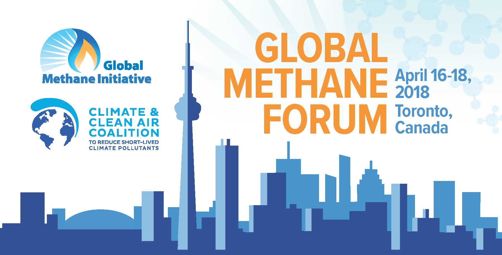

Global Methane Forum
April 16‑18, 2018 • Toronto, Canada
Register today to join your fellow methane experts and policy-makers from around the world to discuss options for methane reduction and abatement activities. Organized by the Global Methane Initiative, the Climate and Clean Air Coalition (CCAC), and the Government of Canada, the Forum will be held back-to-back with a CCAC Working Group Governance meeting, which will take place at the same venue on April 19‑20.
This unique opportunity will grant access to:
- High-level plenary sessions on cross-cutting issues such as project financing.
- Technical sessions on biogas (agricultural sources, municipal solid waste, municipal wastewater systems), coal mines, and oil and natural gas systems.
- Joint GMI Subcommittee – CCAC Initiative level discussions on policy and projects.
- Site visits in the Toronto area highlighting innovative technology.
- Opportunities for networking with methane experts in the public and private sectors from around the world.
| Monday, April 16 |
| All day |
- Clean technology demonstrations
|
| Morning |
|
| Afternoon |
|
| Tuesday, April 17 |
| All day |
- Clean technology demonstrations
|
| Morning |
- Opening and Keynote Address
- Plenary Session – Methane mitigation in 2018 and beyond (TBC)
- GMI and CCAC Joint sector-specific technical sessions
|
| Afternoon |
- GMI technical sessions and Subcommittee meetings
- CCAC Initiative Meetings
|
| Wednesday, April 18 – Science Policy Dialogue |
| All day |
- Clean technology demonstrations
|
| Morning |
- Opening and Keynote Address
- Plenary Session – Update on latest SLCP Science
|
| Afternoon |
- Plenary and break-out groups - Methane science and policy (TBC)
|
| Thursday, April 19 |
| All day |
- CCAC Working Group Meeting (Open to CCAC Partners Only)
|
| Friday, April 20 |
| All day |
- CCAC Working Group Meeting (Open to CCAC Partners Only)
|